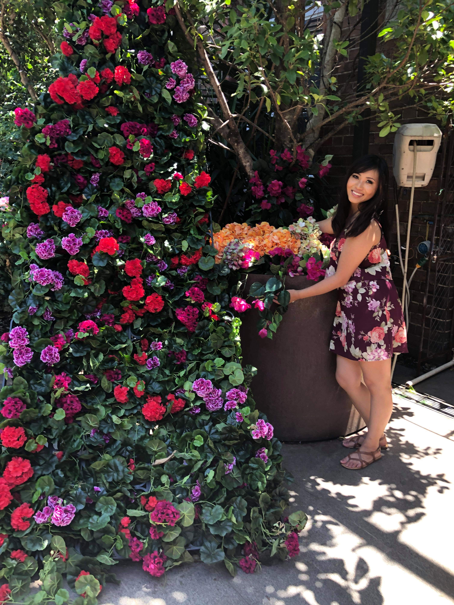

Hey there! I'm Malee
I have been growing succulents since 2016. I got my first succulent from a friend's wedding and was clueless on how to take care of the plant. I had the succulent by the window sill and watered it daily. I was taking care of it like a house plant. It started to rot from the bottom and that is when I started doing more research and learning about succulents.
I started to understand how to take care of succulents. I began buying more succulent plants and experiment with them. Within a year I had over 50 succulents and began learning about propagation. Soon enough I had over 300 succulents.While I was researching about variety type of succulents, I discovered succulent tapestry landscaping. It became a personal hobby I enjoy doing during the weekends. I started to to buy more succulents and design a small area in my backyard with succulents. Be sure to check out my basic succulent care page and let's help your succulents look their very best.
